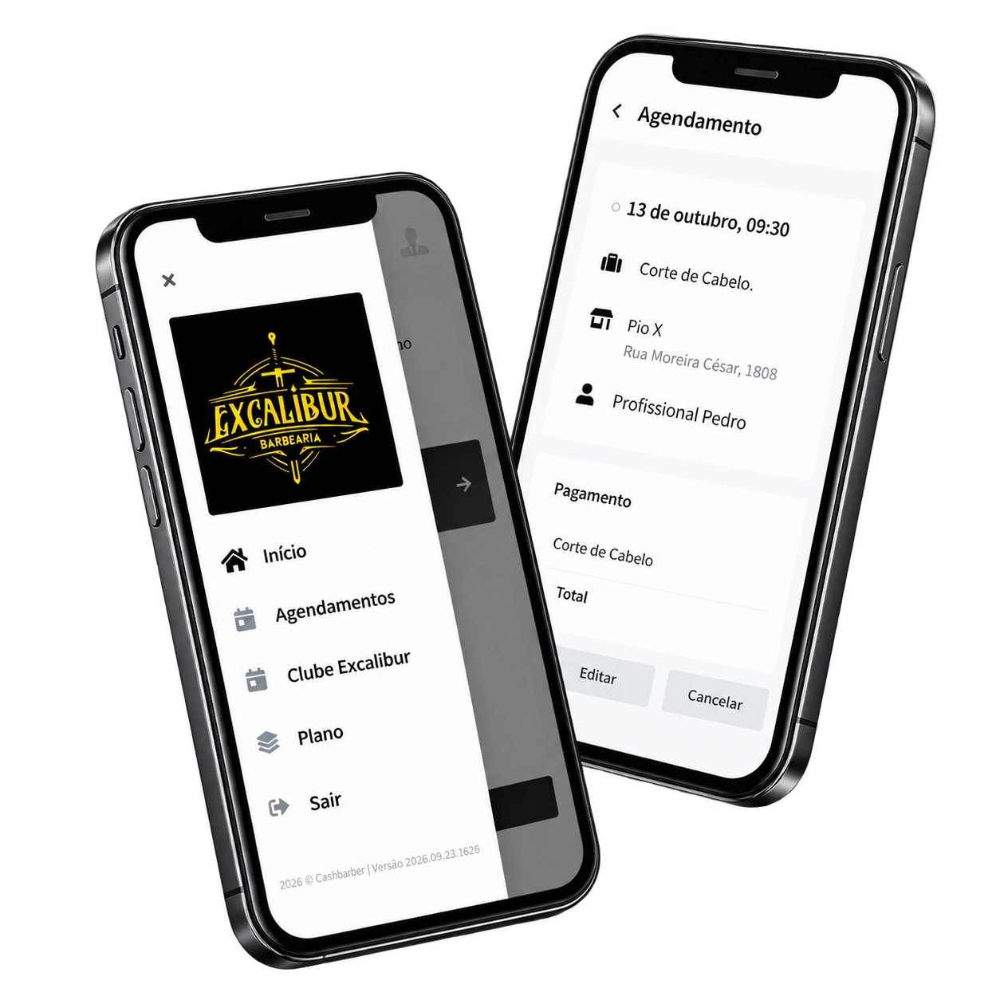
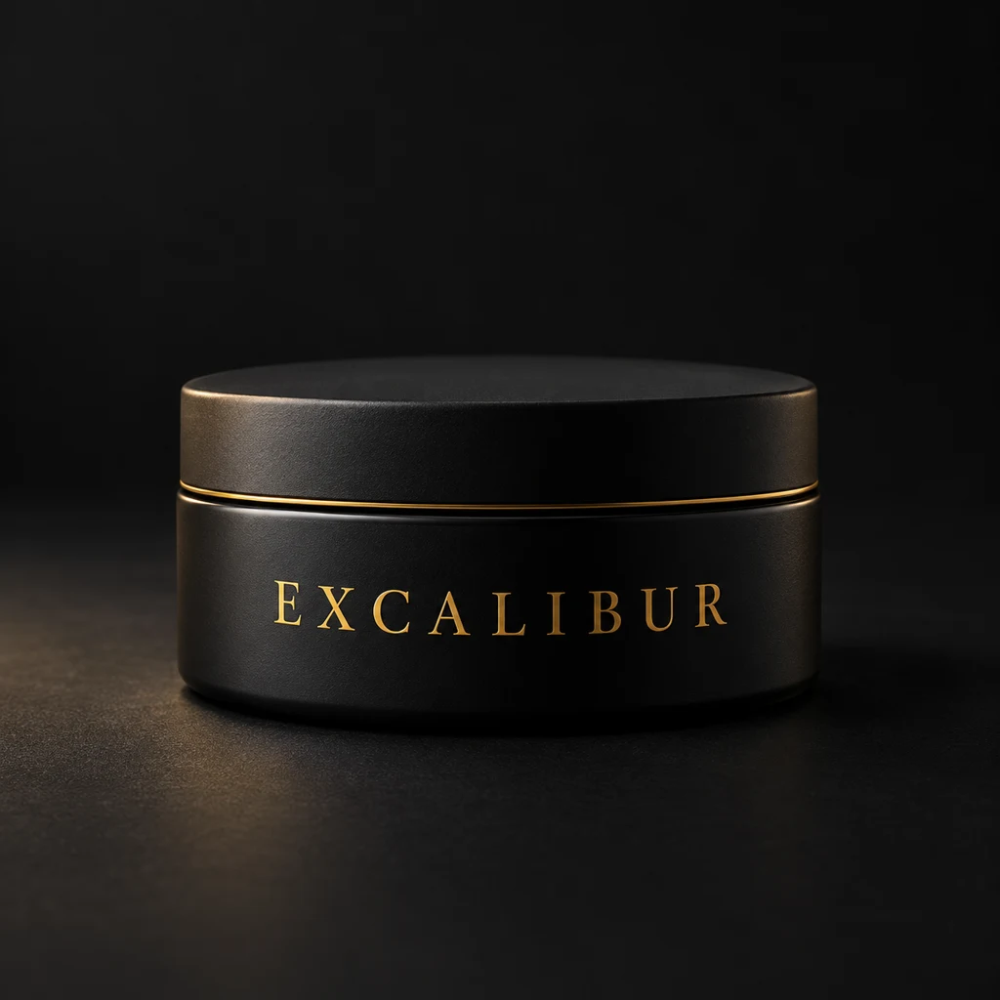
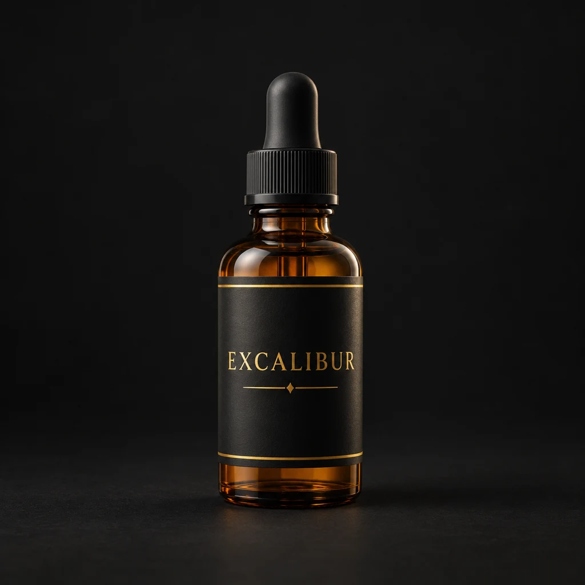
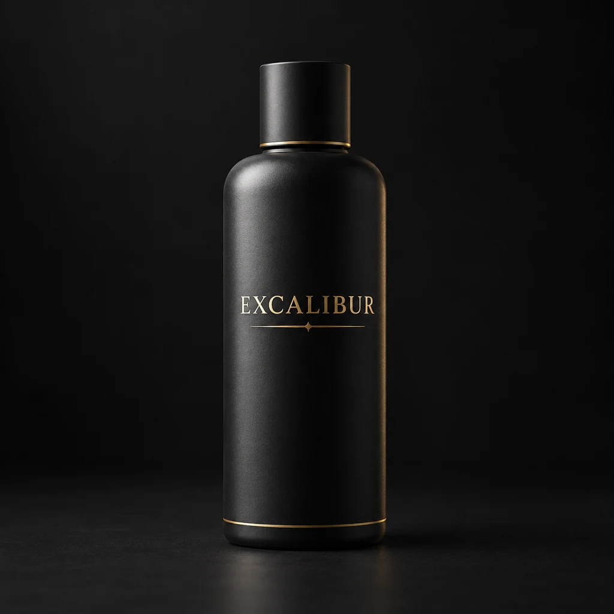

CABELO. BARBA. PRESENÇA.
Seu estilo.
Sua assinatura.
Cabelo, barba e um momento de cuidado para você. Três unidades em Caxias do Sul para fazer parte da sua rotina.
TRÊS UNIDADES EM CAXIAS DO SUL · CABELO E BARBA · UM MOMENTO DE CUIDADO · SEU ESTILO. SUA ASSINATURA. ·
SEU PRÓXIMO PASSO
Seu próximo corte
começa aqui.
Sem um profissional de confiança?
Precisa de um horário que encaixe?
Quer o visual sempre em dia?
SEU PRÓXIMO CORTE
Seu estilo tem espaço aqui.
Degradê e textura
Cabelo e barba
Clássico maduro
Corte infantil
Corte executivo
Corte com desenho
Referências de estilo geradas por IA para esta apresentação.
Escolha seu cuidado. Reserve seu momento.
Corte de cabelo
Do comprimento ao acabamento.
40 min aprox.
Barba
Desenho e acabamento alinhados.
30 min aprox.
Cabelo e barba
Os dois no mesmo atendimento.
70 min aprox.
Corte infantil
Cuidado e atenção para os pequenos.
40 min aprox.
Que tal um cuidado a mais?
- Corte com máquina
- 25 min
- Acabamento do corte
- 10 min
- Sobrancelha
- 15 min
- Depilação de nariz e orelhas
- 15 min
- Lavagem e finalização
- 15 min
- Hidratação capilar
- 20 min
- Hidratação da barba
- 20 min
Serviços e tempos ilustrativos, sujeitos à confirmação com a equipe.
CLUBE EXCALIBUR
Seu estilo em dia,
mês após mês.
Faça do cuidado com cabelo e barba parte da sua rotina.
Combinações demonstrativas, a confirmar.
Nobre
Seu cuidado no começo da semana
- Seu cuidado
- Corte de cabelo
- Quando usar
- Segunda a quarta
Dias a confirmar
Rei
Mais dias para cuidar de você
- Seu cuidado
- Corte de cabelo
- Quando usar
- Segunda a sábado
Dias a confirmar
Elite
Conheça o que faz a diferença
- Seu cuidado
- Corte de cabelo
- Quando usar
- Dias e diferenciais
A confirmar com a equipe
Comparativo demonstrativo. Modalidades, dias, frequência, unidades e profissionais em revisão com a equipe.
Precisa de ajuda para escolher? Fale com a equipe.QUEM JÁ PASSOU POR AQUI
A experiência
de quem já veio.
Atendimento, profissionais e cuidado. A experiência contada por quem conhece a Excalibur.
Lourdes
Avaliação real
a inserir.
Espaço reservado para um depoimento do Google desta unidade.
Google
Autor, data e fonte em conferência
Passeio Norte
Avaliação real
a inserir.
Espaço reservado para um depoimento do Google desta unidade.
Google
Autor, data e fonte em conferência
Pio X
Avaliação real
a inserir.
Espaço reservado para um depoimento do Google desta unidade.
Google
Autor, data e fonte em conferência
Prévia: depoimentos reais serão inseridos após a conferência das fontes.
SEU HORÁRIO, DO SEU JEITO
Seu próximo horário,
na palma da mão.
Prefere agendar pelo app? Acesse a Excalibur no Cash Barber e organize seu próximo atendimento.
Prefere falar com a equipe? Agende pelo WhatsApp.
- 01 · ACESSE
Abra a Excalibur
no Cash Barber. - 02 · ENTRE
Entre na sua conta
ou crie seu acesso. - 03 · AGENDE
Consulte as opções
e conclua na plataforma.
EXCALIBUR EM CAXIAS DO SUL
Três unidades.
Uma perto da sua rotina.
Encontre a Excalibur que faz mais sentido no seu dia.
EXCALIBUR01
Lourdes
Foto real da unidade a inserir
- Endereço
- A confirmar com a equipe
- Horário
- Consulte com a equipe
EXCALIBUR02
Passeio Norte
Foto real da unidade a inserir
- Endereço
- A confirmar com a equipe
- Horário
- Consulte com a equipe
EXCALIBUR03
Pio X
Foto real da unidade a inserir
- Endereço
- A confirmar com a equipe
- Horário
- Consulte com a equipe
A equipe ajuda você a escolher a unidade durante o agendamento.
Prévia: fotos, endereços, horários e mapas em conferência.
9 / Experiência e equipe
Mais cuidado em cada etapa da sua visita.
Um café, uma conversa e um momento para cuidar de você.
Na Excalibur, o corte e a barba fazem parte da visita, junto de um ambiente confortável e da atenção aos detalhes do atendimento.
Um café. Uma pausa.
Um café para acompanhar sua visita.
Cuidado até no lavatório.
Lavatório disponível nas três unidades.
Fique à vontade.
Ambiente climatizado e confortável.
Atenção aos detalhes.
Higiene e organização no atendimento.
Do cuidado com o espaço à lavagem dos cabelos, queremos que você aproveite seu horário com tranquilidade e saia pronto para seguir o seu dia.
Prévia: detalhes da experiência em validação. Consulte a equipe sobre a lavagem no seu atendimento.
Quem está à frente
Alex Fundador da Excalibur
À frente da Excalibur, Alex participa da construção de uma marca que reúne estilo, cuidado e proximidade com seus clientes em Caxias do Sul.
Apresentação em validação com a Excalibur.
Conheça quem vai cuidar do seu próximo corte.
Fotos reais em breve
Lourdes
Profissional a apresentar
Nome e apresentação a inserir.
Fotos reais em breve
Passeio Norte
Profissional a apresentar
Nome e apresentação a inserir.
Fotos reais em breve
Pio X
Profissional a apresentar
Nome e apresentação a inserir.
Espaços de apresentação por unidade. A composição real da equipe será confirmada.
10 / Produtos Excalibur
O cuidado continua depois da cadeira.
Conheça opções para finalizar o cabelo e cuidar da barba na sua rotina. Peça à equipe orientação sobre o produto que faz sentido para o resultado que você procura.

ConceitoFinalização do cabelo
Pomada Matte Excalibur
Uma proposta de finalização para modelar os fios e criar um acabamento de aparência natural.

ConceitoCuidado com a barba
Óleo para Barba Excalibur
Uma proposta de cuidado para incorporar à rotina da barba e ajudar na sua aparência e no toque dos fios.

ConceitoLimpeza dos cabelos
Shampoo Excalibur
Uma proposta de limpeza para o cuidado diário dos cabelos.
Produtos conceituais para apresentação. Nomes, embalagens e características ainda serão definidos com a Excalibur.
11 / Dúvidas frequentes
Antes do seu próximo horário.
Escolha sua pergunta. Se precisar, a equipe conversa com você.
01Como faço para agendar?
Você pode falar com a equipe pelo WhatsApp ou acessar a Excalibur no Cash Barber. No WhatsApp, siga as orientações para escolher a unidade e consultar seu horário.
02Posso escolher a unidade?
Sim. São três unidades em Caxias do Sul: Lourdes, Passeio Norte e Pio X. Informe sua preferência durante o agendamento.
03Posso pedir atendimento com um profissional específico?
Informe o profissional que você procura para que a equipe consulte sua disponibilidade.
04Preciso fazer parte do clube para marcar?
Resposta em conferênciaA resposta sobre atendimento avulso será confirmada com a equipe antes da publicação pública.
05Qual plano combina com minha rotina?
Considere o serviço que deseja e os dias em que pretende utilizar. Fale com a equipe para conferir as condições das modalidades e escolher sua opção.
06Posso usar meu plano em qualquer unidade?
Consulte as unidades e os profissionais incluídos na sua modalidade antes de agendar.
07Quanto tempo devo reservar para o atendimento?
O tempo depende do serviço escolhido. A equipe pode orientar você durante o agendamento. Os tempos desta prévia são ilustrativos.
08Como conheço os produtos disponíveis?
Fale com a equipe pelo WhatsApp para consultar os produtos e esclarecer dúvidas sobre sua utilização.
12 / Seu próximo horário
Reserve um momento para você.
Seu próximo corte, sua barba em dia e uma pausa na rotina. Fale com a Excalibur e consulte seu horário.